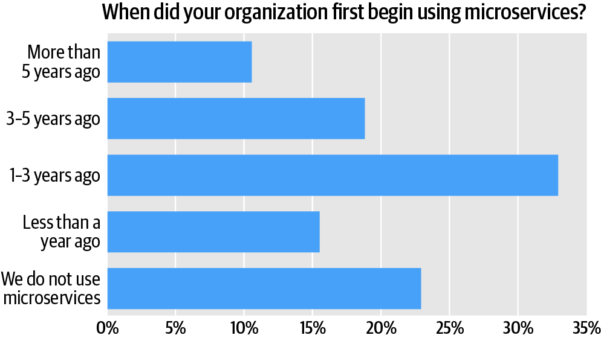
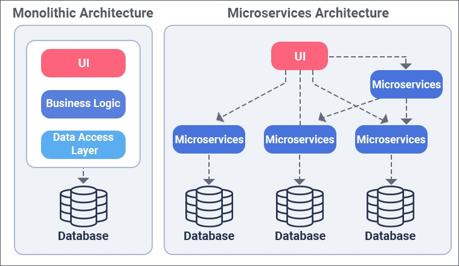
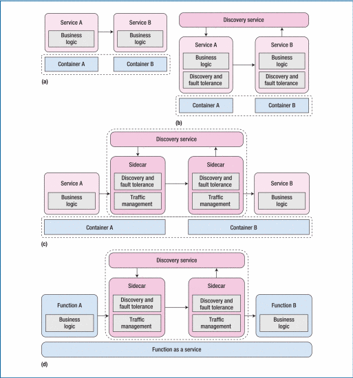

Въведение
Микроуслугите е една от най-обсъжданите и нашумели концепции в света на съвременния софтуерен дизайн. Към настоящия момент тя е със сигурност в топ 5 най-актуални теми и тенденции в сферата. Заедно с контейнери, този подход за изграждане, проектиране и управление на приложения е основна тема в софтуерните среди. И все пак, дефинирането на понятието „микросервиси“ по ясен и достъпен начин остава предизвикателство. В исторически план приложенията често са били изграждани като монолитни системи – цялостни проекти, където всяка нова функционалност се добавя към съществуващата структура. С времето тези проекти стават сложни и тромави: промяната на един компонент може да доведе до срив в цялата система, а скалирането им изисква добавяне на ресурси, което е скъпо и неефективно. Микросервисите променят този принцип за създаване на продукт, като разделят софтуера на малки, независими компоненти, организирани около прости функционалости . Тези компоненти (или услуги) комуникират помежду си чрез API интерфейси и често разполагат със собствени бази данни. Подходът насърчава слаба свързаност между услугите и по-лесно управление, което позволява всяка услуга да бъде разработвана, внедрявана и поддържана самостоятелно.

Представената графика показва колко процента от анкетираните фирми са преминали от монилитна към microservicе структура.Макар и данните да са актуални към 2020 те показват ,че дори тогва едва 22% от всички анкетирани фирми се придържат към монолитни струкутри,като към днешна дата процентът е паднал на 5%.Основна цел на този реферат ще бъде да представи развитието на микроуслугите ,както и тяхното бъдеще.
Еволюция на микроуслугите
Архитектурата на микроуслугите се превърна в крайъгълен камък в еволюцията на разработката на софтуер, променяйки начина, по който се замислят, разработват и внедряват приложенията.
Минало:В ранните етапи на софтуерната разработка монолитните архитектури бяха стандарт. Приложенията се изграждат като едно цяло, включващо потребителски интерфейс, бизнес логика и достъп до данни. Този подход е лесен за малки проекти, но с нарастването на сложността на системите се появяват и сериозни ограничения:
- Трудно мащабиране – изискваше увеличаване на цялата система.
- Сложна поддръжка – всяка промяна налагаше ново внедряване.
- Увеличен риск от грешки – всяка промяна можеше да повлияе на целия проект.
- Чести прекъсвания – цялата система се рестартираше при актуализации.
Поради тези ограничения RESTful архитектурите се появиха през 2000-те, проправяйки пътя за по-децентрализирани подходи. RESTful API-те улесниха комуникацията между компоненти, което доведе до концепцията за микросервизи.
В днешно време Микросервисите се наложиха като основен подход в модерната софтуерна разработка. Те разделят приложенията на малки, независими услуги, които комуникират чрез API. Този архитектурен стил предлага:
НастоящеУчениците могат да се сблъскат с неподходящо съдържание или да срещнат онлайн хищници, докато сърфират в интернет или използват социални медии.
- Гъвкавост – екипите могат да разработват и внедряват услуги независимо.
- Мащабируемост – всяка услуга се мащабира самостоятелно.
- Технологично разнообразие – различните услуги могат да използват различни технологии.
- Устойчивост – повредата на една услуга не влияе върху цялата система.
Инструменти като Docker и Kubernetes улесниха внедряването на микросервизи, а компании като Netflix и Amazon демонстрират успеха на този подход. Все пак предизвикателства като сложност, мрежова латентност остават актуални.
Бъдеще:В бъдещето развитието на микроуслугите ще продължи,като то ще бъде повлияно от нови технологии:
- Безсървърни архитектури – позволяват разработка без грижа за инфраструктурата, правейки приложенията по-гъвкави.
- Изкуствен интелект – ще автоматизира операции и ще оптимизира ресурси.
- Edge Computing – ще приближи услугите до крайния потребител за по-бързи и реални отговори.
- Усъвършенстван CI/CD – по-автоматизирани процеси ще ускорят внедряването на нови функции.
Java Микроуслуги
Основи на Java микроуслуги Java микроуслугите представляват модулен подход за разработка, при който големи приложения се разделят на по-малки, самостоятелно внедряеми услуги. Те са естествено продължение на монолитните Java приложения, където целият код се пакетира и внедрява като един файл.
Монолитни Java приложения
В монолитния модел цялата логика на приложението се изпълнява в една JVM (Java Virtual Machine). Пример е банково приложение, което включва валидация на данни, проверка на риска и създаване на акаунт. Монолитите са лесни за внедряване в началото, но с времето стават трудни за управление, поддръжка и мащабиране.За да се избегнат ограниченията на монолитите, дадени функционалности (напр. проверката на риска) се извеждат в отделни микроуслуги. Всяка микроуслуга работи в собствена JVM, комуникирайки с другите чрез API. Това разделяне позволява по-голяма гъвкавост, мащабируемост и независимост.

Видове комуникация между микроуслуги
- Синхронна комуникация (REST/HTTP): Подходяща за операции, които изискват незабавен отговор, напр. проверка на риска.
- Асинхронна комуникация (Messaging): Използва се, когато незабавен отговор не е критичен, напр. генериране на фактура.
Преход от монолит към микроуслуги: Съществуващите монолити често се разделят на микросервизи, базирани на логически домейн граници, като например "Управление на акаунти" или "Модул за рискове". Най-честите предизвикателства са разделянето на стари, свързани модули,защото изисква висока техническа експертиза и задълбочено разбиране на съществуващия код. В работната среда микроуслугите предлагат много предимства, но тяхната ефективност зависи от правилната им имплементация. Широко разпространено мнение е „Ако не можете да изградите монолит правилно, микроуслугите няма да помогнат.“
Основни характеристики на Greenfield проектите Няма наследен код, който да се поддържа, но и липсва ясна представа за домейн границите на проекта. Желанието е да се избегне сложност в бъдеще, но началната неопределеност на изискванията (често поради гъвкави методологии като Agile) води до предизвикателства в дизайна.Подходи към микросервисна архитектура
Техническа архитектура на микросервизи
Опит за автоматично извличане на микроуслуги чрез инструменти или разделяне на малки функционалности (напр. замяна на Java метод с HTTP повикване).
- Пример: Разделяне на substring функция като отделен микросервиз.
- Проблем: Добавя излишна сложност без осезаема полза.
- Препоръка: Избягвайте този подход. Микроуслугите трябва да са логически обосновани, а не технически наложени.
- Въпроси: Ще има ли смисъл да внедрите шест приложения за обработка на един XML файл? Какво става, ако един микросервиз е неактивен? Да споделят ли микроуслугите една база данни или всяка услуга да има собствена?
- Проблеми: Въпреки ясната логика на хартия, оперативните предизвикателства на този подход са сериозни.
- Препоръка: Създавайте микроуслуги, базирани на ясни домейн граници (напр. управление на потребители, фактуриране). Започнете с по-големи модули, които можете да разделите по-късно. Убедете се, че разполагате със силни DevOps умения, за да поддържате сложната инфраструктура.
Всеки екип или програмист използва различен език за дадена задача (напр. Java за XML валидация, Haskell за проверки за съвместимост, Erlang за скалируемост).
- Предимства: Свобода на разработчиците.
- Недостатъци: Липса на стандартизация, което води до трудна поддръжка в бъдеще.
- Препоръка: Ако изберете полиглотен подход, ограничете се в рамките на една екосистема, напр. Kotlin и Java (и двата базирани на JVM). Това осигурява съвместимост и по-лесна поддръжка.
В следващия абзац ще се обърне внимание на деплойване и тестване на Джава микроуслуги
Деплойване на Java микросървиси
- Основни принципи: Java микросървисите са обикновени .jar/.war файлове, които могат да се стартират на всяка платформа с подходяща JVM. Деплойването може да варира от базови стъпки до сложни оркестрации с инструменти като Docker и Kubernetes.
- Методи за деплойване: Традиционен подход: С билд инструменти (Maven/Gradle), SSH/SCP и скриптове за автоматизация като Ansible. Docker: Оптимизиран за стандартизирани среди, като позволява лесно управление на зависимости и конфигурации. Docker Swarm/Kubernetes: За управление на клъстери и автоматизация на процеси, но с висока сложност, изискваща YAML конфигурации.
Тестване на микросървиси
- Предизвикателства при интеграционното тестване: Необходимост от стартиране на всички микросървиси в една среда за тестване на цялостни работни потоци. Управление на съпътстващи компоненти като съобщителни брокери (RabbitMQ, ActiveMQ).
- Решения: Обединяване на микросървисите в един процес за локални тестове. Репликиране на Docker Swarm/Kubernetes средата локално. Ползване на специализирана DEV/TEST среда за интеграционно тестване.
Избор на Java фреймуърк
Популярни фреймуъркове са Spring Boot (утвърдена екосистема) и нови алтернативи като Quarkus, Micronaut, Vert.x, Helidon. Основен критерии при избор е силната документация, активна общност и стабилна екосистема имат по-голямо значение от бързото време за стартиране на микросървиси. Препоръчително е първо да се оптимизира монолитната архитектура, преди да се премине към микросървисна. Успешнатата реализация на Java микросървиси изисква силен екип с опит в DevOps и архитектурно проектиране. Правилният избор на технологии, съобразени с реалните нужди и умения на екипа.Постоянен фокус върху устойчивост, тестване и опростяване на процесите.
Микросервизите предлагат гъвкавост, но добавят сериозна техническа и организационна сложност. Балансът между монолитни архитектури и микросервизи зависи от нуждите на проекта. За нови проекти е разумно да се започне с по-проста, модулна архитектура.
Микросървис архитектура с Node.js
Node.js е една от популярните платформа за изграждане на архитектурки чрез микроуслуги.Тя е използвана от редица известни компании като Microsoft, PayPal и Uber.Причините те да изберат Node.js са много но ето част от по-съществените:
- Скорост (работи с V8 JavaScript Engine)
- Асинхронност (обработка на заявки без блокиране)
- Скалируемост (поддържа голям брой едновременни заявки)
- Интеграция с модули (богатство от библиотеки и инструменти)
Създаването на микроуслуга,използвайки Node.js преминава през няколко етапа.Ще дадем пример с услуга която приема два пощенски кода и показва разстоянието между тях.
- Оценка на нуждите: Определяне на функционалностите, като изчисляване на разстояние между два ZIP кода.
- Инициализация
- Инсталиране на Node.js и NPM.
- Създаване на проект с npm init.
- Добавяне на зависимости като Express и Request.
- Създаване на сървър:
- Кодът създава сървър и маршрути за заявките.
- Сървърът използва Express за обработка на API заявките.
- Дефиниране на маршрути: Използване на крайни точки за заявки, например /about и /distance.
- Добавяне на контролери: Контролерите обработват логиката и синхронизират данните между потребителските заявки и API.
- Външни API извиквания: Използване на Request за свързване с външни API, като ZIPCODEAPI, за изчисляване на разстояние.
- Изпълнение: Преглед и тестване на готовия микросервис.
След като обърнахме внимание на изграждането на микроуслуга с Node.js сега ще коментираме някои предизвикателства при работа с него.Node.js е еднопоточен, което ограничава производителността при тежки задачи.Друг проблем е ,че някои модули имат недостатъчна документация.При прекомерна употреба на callback функции попадаме в Callback hell.И последния проблем,който в последните години се оправя макар и да не е решен съвсем е недостигът на квалифицирани кадри,които да работят с Node.js.
Node.js остава водеща платформа за изграждане на микросервизи поради своята мащабируемост, ефективност и подкрепа за RESTful API. Въпреки предизвикателствата,развитието на Node.js няма да спре , а интересът към него само ще расте.
Пътят досега и предстощите предизвикателства
Концепцията за микросервизи се е развила от SOA, тъй като индустриалните експерти осъзнали ограниченията на традиционните уеб протоколи като SOAP. Терминът "микросервизи" се е появил през 2011 г., като влияние от концепции като проектирование, основано на домейн, и непрекъсната интеграция. Развитието на микросервизите продължава с технологични напредъци като контейнери, инструменти за оркестрация (например Kubernetes), решения за мониторинг и сървърни технологии без инфраструктура (serverless), които допринасят за подобряване на разгръщането, операциите и мащабирането на микросервисите. Архитектурно микросервисите са преминали през няколко етапа. Първоначално услугите се разгръщат в контейнери с механизми за откриване на услуги и толерантност към грешки. С времето възникват технологии като мрежи за услуги (service meshes) и сървърни технологии без инфраструктура (serverless), които предоставят по-интегрирани решения за управление, комуникация и толерантност към грешки, което още повече увеличава гъвкавостта и мащабирането на микросервисите.

Микросервисите стават все по-популярни, но тяхното прилагане не винаги е подходящо за всички ситуации. Ето някои от основните предизвикателства и области, които изискват внимание в бъдеще:- Модуларизация на услугите и рефакторинг: При проектирането на микросервизи е важно да се определят правилните граници между услугите, за да не се доведе до проблеми с производителността и стабилността. Необходимостта от инструменти за рефакторинг и използването на асинхронна комуникация може да помогне за решаването на тези проблеми.
- Грануларност на услугите :Няма консенсус за идеалния размер на микросервисите. Някои екипи създават много малки услуги, докато други обединяват по-големи компоненти. Нужно е да се развият шаблони, които да помагат при определянето на правилния размер на услугите.
- Интеграция на фронт-енд компонентите: Микросервисите често се фокусират върху бекенд частта, оставяйки фронтенда по-малко модуларизиран. Това води до проблеми, когато монолитен фронт-енд използва множество бекенд микросервизи. Нужно е и фронт-енд частта да бъде разделена на микросервизи.
- Мониторинг на ресурсите и управление :С нарастването на броя на услугите и инфраструктурните ресурси, мониторингът и управлението на тези ресурси стават все по-сложни. Нужни са стратегии за автоматизация и използване на машинно обучение, за да се управляват ресурси ефективно.
- Откази, възстановяване и самовъзстановяване :Микросервисите, като разпределени системи, са уязвими на откази. За да се минимизират последствията от тези откази, е необходимо да се изградят услуги с висока устойчивост и автоматизирани механизми за самовъзстановяване.
- Организационна култура и координация :Самостоятелността на екипите е предимство, но може да води и до проблеми с координацията между различни екипи и с целите на организацията. Нужно е да се създадат структури за координация, които да позволяват автономност, но и да вземат предвид общата архитектура и цели на компанията.
Заключение
Рефератът разгледа -микроуслугите,които представляват мощен архитектурен подход, който предлага значителни ползи като гъвкавост, мащабируемост и възможност за независима разработка на компоненти.С наблюдението върху развиетото и техния възход,той показа че тяхното успешно внедряване изисква внимателно обмисляне на редица предизвикателства, включително модуларизация, интеграция на фронтенд и бекенд части, управление на ресурси, устойчивост към откази и координация между екипите. Сблъсъкът с тези предизвикателства кара организациите да внедряват добри практики, като модулен дизайн, автоматизирани механизми за мониторинг и възстановяване, както и култура на сътрудничество,които ще улеснят работата.Същевременно по-тясното взаимодействие между индустрията и академичната общност може да ускори разработването на иновативни решения и инструменти, които да помогнат за по-ефективно прилагане на микроуслуги в реални производствени среди. Въпреки сложността си, микроуслугите остават важен инструмент за съвременния софтуерен инженеринг, предоставяйки основа за изграждане на мащабируеми, устойчиви и високопроизводителни системи. Успешното им прилагане зависи от баланса между техническите решения, организационната структура и дългосрочните бизнес цели.
Използвани Източници
-
[1] Автор: Darshit Patel, Dominic Holt, Thomas Basikolo , Nathaniel Gibson, Juan Miguel de Joya , “Getting Started with Microservices” от "ACM Selects", Ноември 2020 , Бележки от Уеб-страница Последно посетен на 29.11.2024.
-
[2] Автор: Kevin Casey, “How to explain microservices in plain English” 2017г , Бележки от Уеб-страница Последно посетен на 28.11.2024.
-
[3] Автор: Mac Slocum, “Microservices: A quick and simple definition ” 2018. Уеб-страница Последно посетен на 18.04.2024.